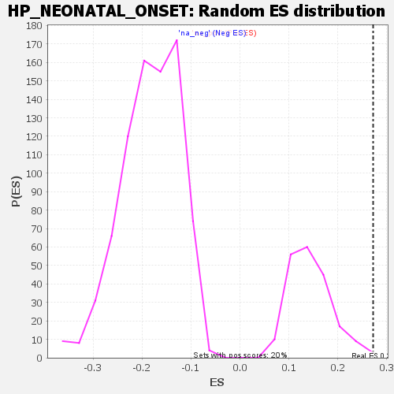

| | | Dataset | genes_ranked_stat_0.1 |
| Phenotype | NoPhenotypeAvailable |
| Upregulated in class | na_pos |
| GeneSet | HP_NEONATAL_ONSET |
| Enrichment Score (ES) | 0.2723809 |
| Normalized Enrichment Score (NES) | 1.8857851 |
| Nominal p-value | 0.005 |
| FDR q-value | 0.31929415 |
| FWER p-Value | 0.862 |
Table: GSEA Results Summary
 Fig 1: Enrichment plot: HP_NEONATAL_ONSET
Fig 1: Enrichment plot: HP_NEONATAL_ONSET
Profile of the Running ES Score & Positions of GeneSet Members on the Rank Ordered List
| SYMBOL | RANK IN GENE LIST | RANK METRIC SCORE | RUNNING ES | CORE ENRICHMENT | | 1 | FGF12 | 25 | 3.596 | 0.0096 | Yes |
| 2 | SOX10 | 49 | 3.173 | 0.0171 | Yes |
| 3 | LMBRD1 | 97 | 2.832 | -0.0043 | Yes |
| 4 | SLC38A3 | 100 | 2.802 | 0.0217 | Yes |
| 5 | KCNQ2 | 132 | -2.735 | 0.0164 | Yes |
| 6 | FGF13 | 180 | -2.797 | -0.0054 | Yes |
| 7 | HR | 187 | -2.800 | 0.0164 | Yes |
| 8 | VDR | 188 | -2.800 | 0.0445 | Yes |
| 9 | ENPP1 | 193 | -2.806 | 0.0685 | Yes |
| 10 | H1-4 | 205 | -2.814 | 0.0851 | Yes |
| 11 | NAGS | 219 | -2.829 | 0.0997 | Yes |
| 12 | KYNU | 322 | -2.930 | 0.0210 | Yes |
| 13 | TSHR | 323 | -2.931 | 0.0504 | Yes |
| 14 | UNC13D | 339 | -2.952 | 0.0641 | Yes |
| 15 | OSTM1 | 344 | -2.958 | 0.0896 | Yes |
| 16 | COL7A1 | 371 | -2.989 | 0.0921 | Yes |
| 17 | SLC2A1 | 382 | -3.011 | 0.1117 | Yes |
| 18 | ACSL5 | 383 | -3.012 | 0.1420 | Yes |
| 19 | LAT | 404 | -3.051 | 0.1514 | Yes |
| 20 | ADA2 | 420 | -3.081 | 0.1665 | Yes |
| 21 | GJB2 | 433 | -3.109 | 0.1850 | Yes |
| 22 | BRAT1 | 444 | -3.123 | 0.2057 | Yes |
| 23 | ANK1 | 450 | -3.132 | 0.2319 | Yes |
| 24 | TTN | 469 | -3.169 | 0.2446 | Yes |
| 25 | EEF1A2 | 474 | -3.183 | 0.2724 | Yes |
| 26 | KCNQ3 | 604 | -3.460 | 0.1703 | No |
| 27 | RNF125 | 638 | -3.535 | 0.1709 | No |
| 28 | TNNT1 | 645 | -3.551 | 0.2002 | No |
| 29 | LAMA3 | 648 | -3.565 | 0.2339 | No |
| 30 | GUCY1A1 | 726 | -3.845 | 0.1908 | No |
| 31 | FOCAD | 972 | -6.970 | 0.0011 | No |
Table: GSEA details [plain text format]

Fig 2: HP_NEONATAL_ONSET: Random ES distribution
Gene set null distribution of ES for HP_NEONATAL_ONSET